How to Read These Charts
Each chart is a Variability Chart showing the mean value of a measurement across all tested signals and VT corners. Outliers (beyond 1.5×IQR) have been removed.
- Y axis — Mean measured value (units depend on measurement: seconds for timing, volts for voltage).
- X axis — Grouped by Signal (Clock, TXIO0–3, ChipSelect) and then by VT Corner.
- Each dot — One measurement instance (one test run / one unit).
- Group means — Horizontal lines showing the average per group.
- Spread (vertical scatter) — Indicates variability; tight clusters = consistent, wide spread = high variation.
Signal Reference
| Signal | Description |
|---|---|
| Clock | SPI clock signal (SCK). Drives the bus timing. All timing measurements reference this signal. |
| TXIO0 | SPI data line 0 (MOSI in single mode). Primary data output from controller. |
| TXIO1 | SPI data line 1 (MISO in single mode). Primary data input to controller. |
| TXIO2 | SPI data line 2. Used in Quad mode for parallel data transfer. |
| TXIO3 | SPI data line 3. Used in Quad mode for parallel data transfer. |
| ChipSelect | SPI chip select (CS#). Active-low signal that enables the target device on the bus. |
⏱ Clock Timing Measurements
Period
TimingWhat it measures: The time duration of one complete clock cycle (rising edge to rising edge). For a 42 MHz SPI clock, the expected period is approximately 23.8 ns.
Why it matters: Clock period determines the data rate of the SPI bus. Variation in period means jitter, which can cause setup/hold violations at the receiver.
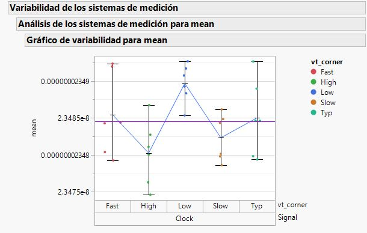
DutyCycle
TimingWhat it measures: The ratio of clock high time to total period, expressed as a percentage or fraction. Ideal duty cycle is 50%.
Why it matters: An asymmetric duty cycle (far from 50%) reduces the timing margin for both setup and hold on both clock edges, which is critical in DDR or dual-edge clocking schemes.
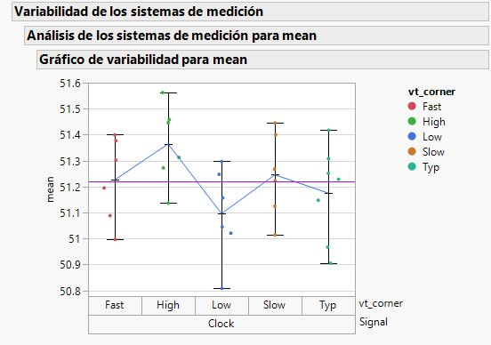
HighTime
TimingWhat it measures: The duration the clock signal stays at logic HIGH in one cycle.
Why it matters: Defines the valid data window for sampling on the falling clock edge. Too short = insufficient time for data to stabilize before capture.
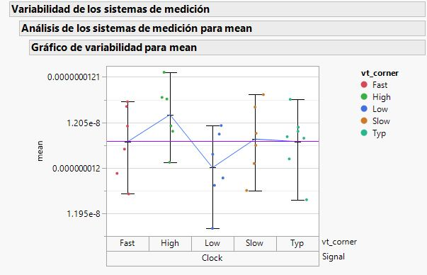
LowTime
TimingWhat it measures: The duration the clock signal stays at logic LOW in one cycle.
Why it matters: Defines the valid data window for sampling on the rising clock edge. Together with HighTime, these two determine the duty cycle balance.
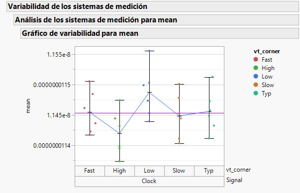
t180a (180° Phase Alignment)
TimingWhat it measures: The time between rising and falling edges, expected to be exactly half the period (180° phase). Deviation from ideal indicates duty cycle distortion.
Why it matters: Critical for synchronous SPI communication where data is latched on both edges or where clock symmetry is assumed by the protocol.
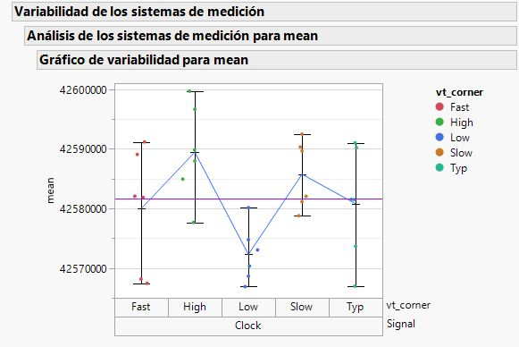
⚡ Edge Rate Measurements
tR (Rise Time)
TimingWhat it measures: The time for a signal to transition from LOW to HIGH (typically measured between 30% and 70% of the voltage swing).
Why it matters: Faster rise times produce cleaner digital signals but can cause electromagnetic interference (EMI) and overshoot/ringing. Too slow = risk of setup time violations.
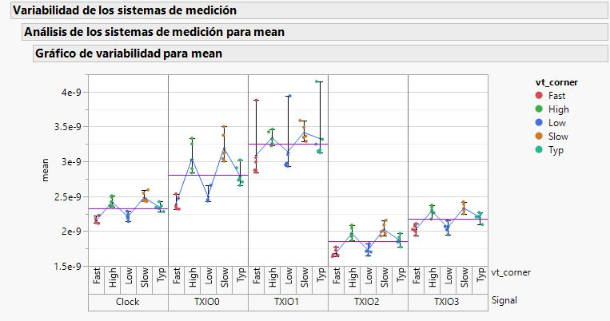
tF (Fall Time)
TimingWhat it measures: The time for a signal to transition from HIGH to LOW (typically 70% to 30% of voltage swing).
Why it matters: Same as rise time but for falling edges. Asymmetry between tR and tF indicates pull-up vs. pull-down driver imbalance in the I/O buffer.
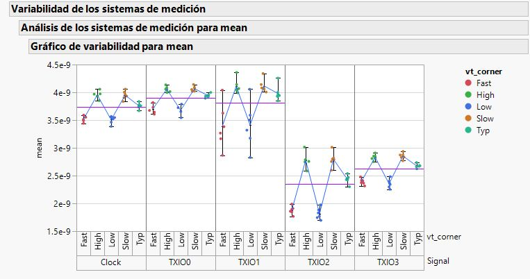
🔒 Setup & Hold Timing
SetupTime
TimingWhat it measures: The time the data signal is stable before the active clock edge. This is the combined (worst-case) setup time.
Why it matters: If setup time is too short, the receiver may latch incorrect data (metastability). This is one of the most critical SPI validation parameters.
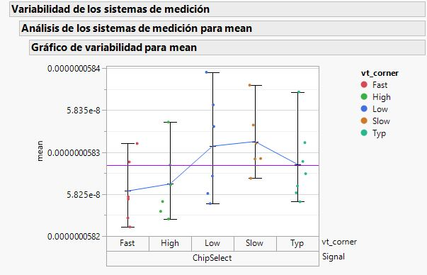
HoldTime
TimingWhat it measures: The time the data signal remains stable after the active clock edge.
Why it matters: If hold time is too short, the receiver may sample the transitioning data instead of the stable value. Along with setup, these form the critical timing window.
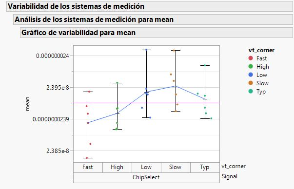
SetupR (Setup on Rising Edge)
TimingWhat it measures: Setup time measured specifically with respect to the rising edge of the clock.
Why it matters: In SPI CPHA=0, data is sampled on the rising edge. This measurement directly determines if data will be captured correctly on that edge.
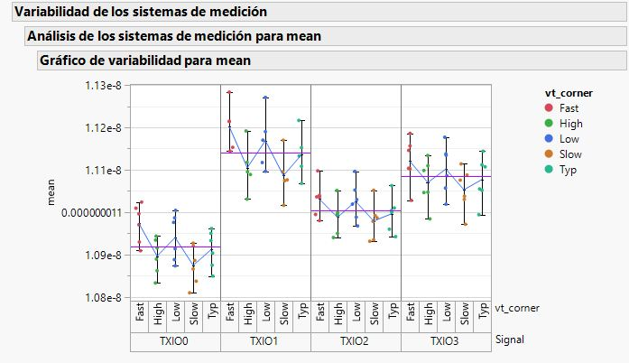
SetupF (Setup on Falling Edge)
TimingWhat it measures: Setup time measured specifically with respect to the falling edge of the clock.
Why it matters: In SPI CPHA=1, data is sampled on the falling edge. Also relevant in Quad mode where both edges may carry information.
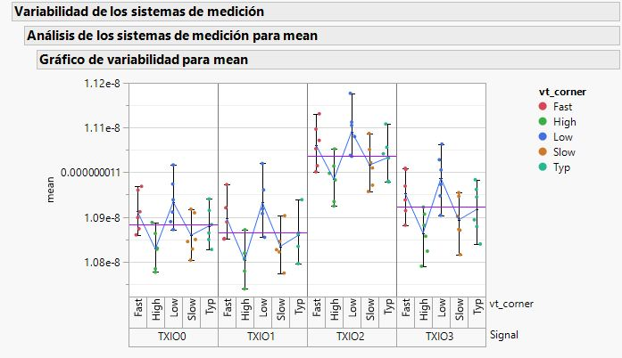
HoldR (Hold on Rising Edge)
TimingWhat it measures: Hold time measured specifically after the rising edge of the clock.
Why it matters: Ensures data remains stable long enough after the rising clock edge for reliable capture.
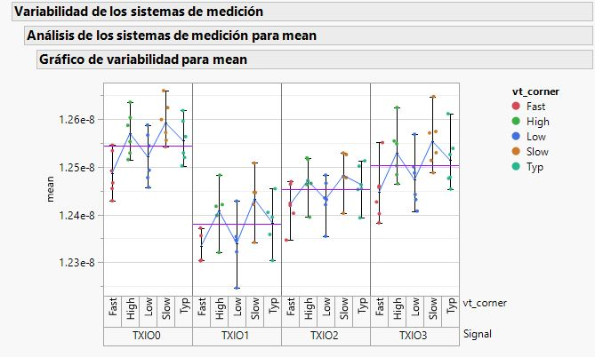
HoldF (Hold on Falling Edge)
TimingWhat it measures: Hold time measured specifically after the falling edge of the clock.
Why it matters: Complementary to HoldR. Together they provide the complete hold margin picture for both clock phases.
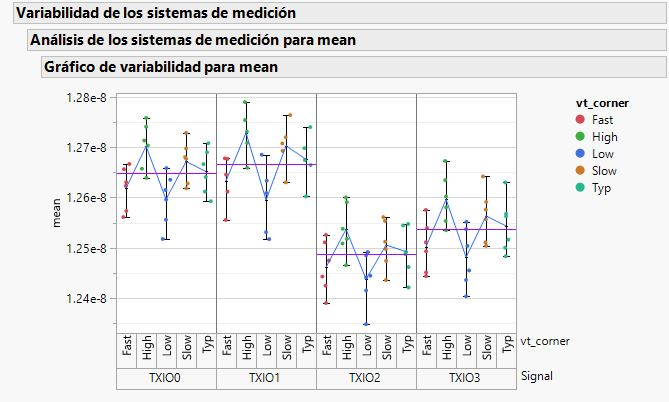
⚗ Voltage Level Measurements
Vmax (Maximum Voltage)
VoltageWhat it measures: The highest voltage reached by the signal, including any overshoot. Measured in Volts.
Why it matters: Must not exceed the absolute maximum rating of the receiving device (typically VIH spec or pad voltage limit). Exceeding it risks oxide damage and long-term reliability failures.
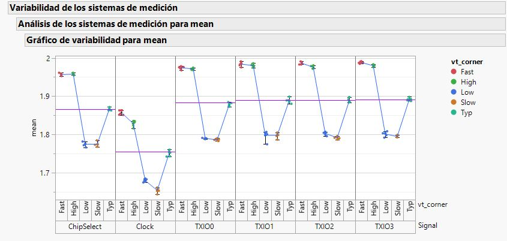
Vmin (Minimum Voltage)
VoltageWhat it measures: The lowest voltage reached by the signal, including any undershoot. Measured in Volts.
Why it matters: Should not go below the absolute minimum (typically GND – 0.3V or spec limit). Negative voltages can forward-bias ESD protection diodes and inject current into the substrate, causing latch-up.
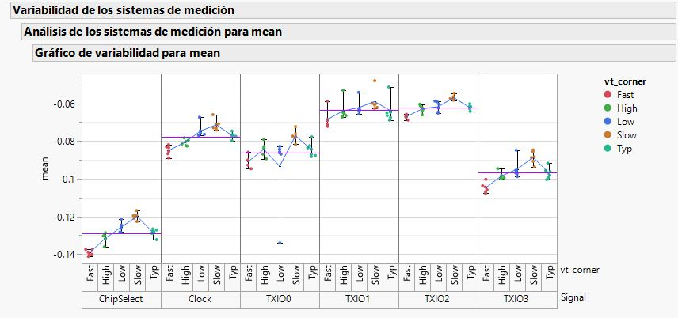
📈 Signal Quality Measurements
Overshoot
Signal QualityWhat it measures: The amount by which the signal exceeds the high voltage rail during a rising transition. Expressed in Volts above VDD or as a percentage.
Why it matters: Excessive overshoot stresses the I/O pad, causes EMI, and can trigger ESD protection diodes. It is primarily caused by impedance mismatches and excessive edge rates.
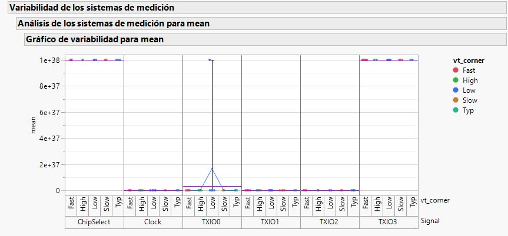
Undershoot
Signal QualityWhat it measures: The amount by which the signal goes below GND during a falling transition. Expressed in Volts below GND or as a percentage.
Why it matters: Same reliability concerns as overshoot but on the low side. Can cause substrate current injection and latch-up in severe cases.
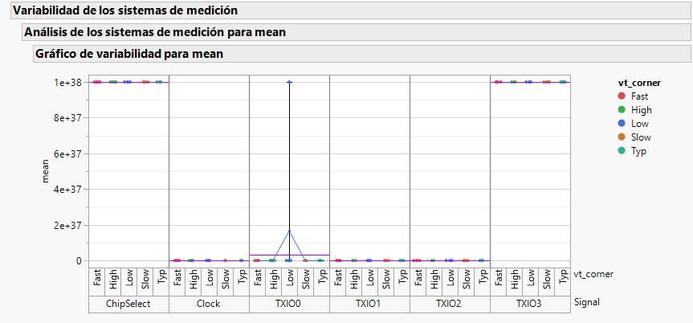